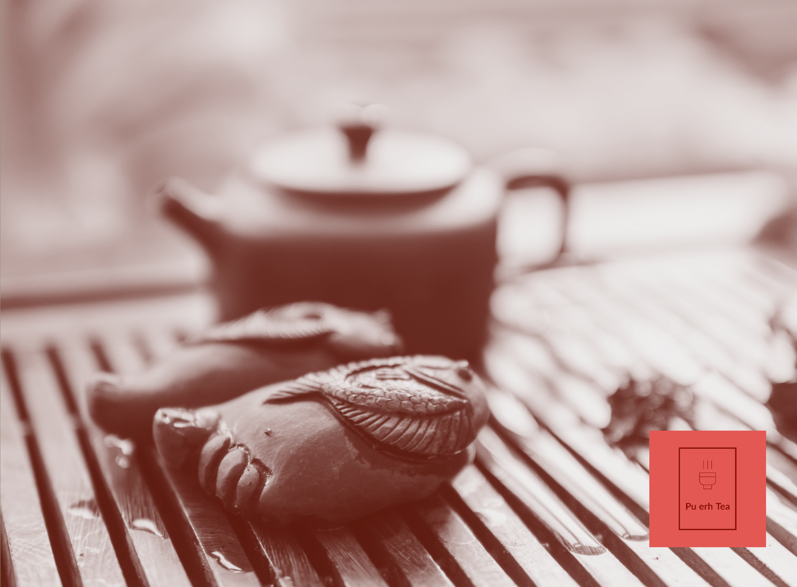
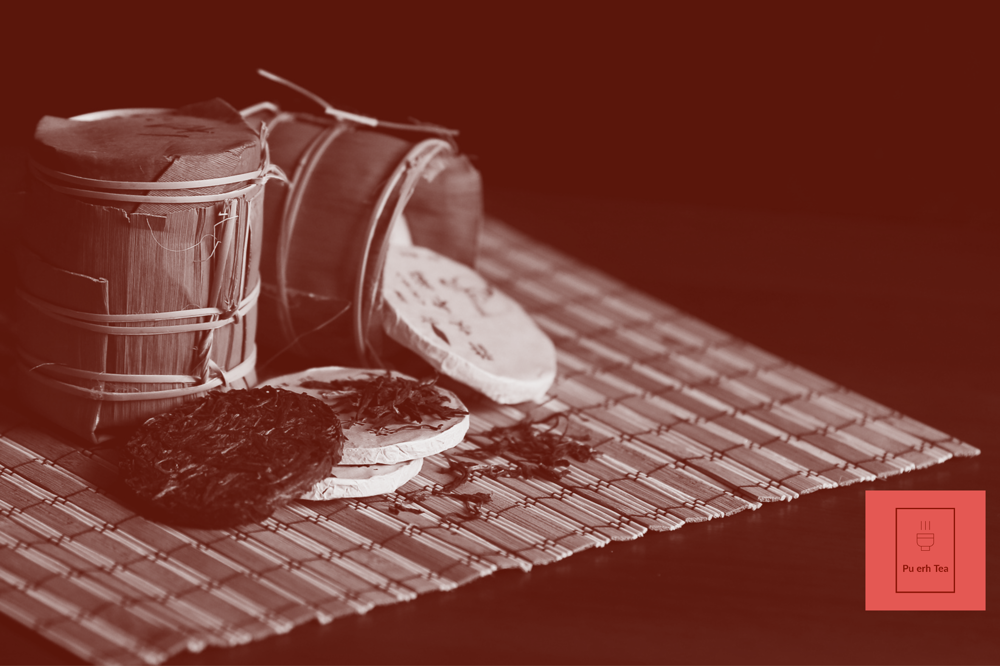

One of the cultural traditions and the use of Pu Erh tea, is it's use as
an important part of spiritual practice, particularly in Chinese and
Tibetan Buddhism.


Tea as spiritual tool traditions,
Tea is often used as a tool for meditation and mindfulness practice. The
process of preparing and drinking Pu Erh tea can be seen as a form of
meditation, requiring a focused and present mind. Practitioners may also
use tea ceremonies as a way to cultivate a sense of community and
connection with others. In addition, Pu Erh tea is often considered to
have energetic and spiritual properties. Some practitioners believe that
the tea can help to balance and harmonize the body's energy, or qi, and
can promote feelings of calm and centeredness.
Health Benefits
Pu Erh tea is also prized for its potential health benefits. Some studies
suggest that Pu Erh tea may help to improve digestion, reduce cholesterol
levels, and promote cardiovascular health.
Here is a recap of the Benefits
Digestive health: Pu-erh tea is believed to promote digestive
balance and aid in the digestion of fatty foods.
Weight management: Some studies suggest that pu-erh tea may help
with weight loss by increasing metabolism and reducing fat
absorption.
Heart health: Pu-erh tea may help improve heart health by reducing
blood pressure and cholesterol levels.
Anti-inflammatory properties: Pu-erh tea contains antioxidants that
have anti-inflammatory effects, which may help reduce inflammation
in the body.
Brain health: Some studies suggest that pu-erh tea may have
neuroprotective properties and may help improve cognitive function
and memory.
It's important to note that while Pu-Erh Tea has potential health
benefits, it is not a cure-all, and more research is needed to fully
understand its effects on human health. Additionally, it is always a good
idea to speak with a healthcare professional before incorporating any new
food or drink into your diet.